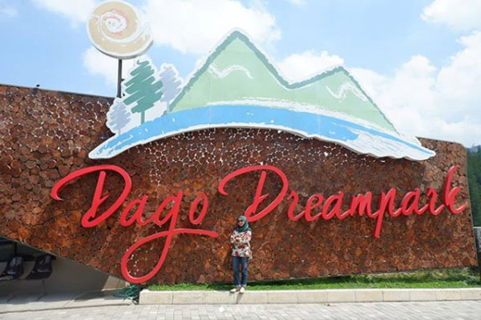

Dago Park
Dago Dream Park adalah wisata kekinian di Kota Bandung dengan luas 13 hektar
Untuk akses ke tempat ini cukup mudah karena memiliki jarak yang tidak terlalu jauh dari pusat Kota Bandung. Selain wahana-wahana yang tersedia, di sini juga terdapat restoran yang membuat liburan menjadi lebih lengkap. Taman wisata Dago Dream Park berlokasi di Jl. Dago Giri Km. 2.2 Mekarwangi, Pagerwangi, Lembang, Bandung, Jawa Barat, 40135. Pada hari biasa, Dago Dream Park buka dari jam 08.00-18.00, sedangkan pada akhir pekan buka dari pukul 08.00-17.00.